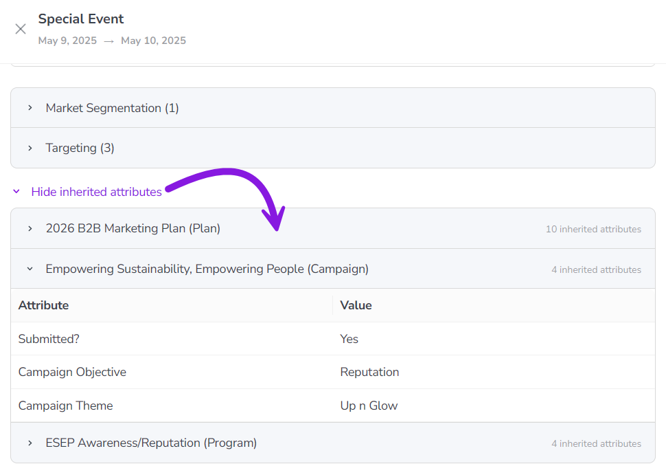

About activities and the activity hierarchy
In Uptempo Campaign Management, an activity is any planned initiative you create to promote a product, service, or message to a defined audience.
Activities are the core building blocks of Campaign Management and are used to represent every level of your marketing hierarchy. An activity can correspond to a high-level initiative (such as a plan, campaign, or program), or to an individual execution, such as a specific tactic. Regardless of its level, each activity is configured, scheduled, tracked, and measured so you can understand its contribution to inquiries, pipeline, and overall marketing impact.
In Uptempo Campaign Management, activities are organized into a hierarchy and displayed in the  Activities section:
Activities section:

For example, a common hierarchy includes levels like:
Plan
Campaign
Program
Tactic
The structure of your activity hierarchy is defined during implementation in collaboration with your organization's marketing team to ensure it reflects how you plan and manage marketing initiatives. This flexible approach allows Uptempo to support a wide range of marketing models while maintaining consistent planning, measurement, and reporting across all activities.
Hierarchy paths and relationships
To clarify how hierarchies work in Uptempo, it is helpful to understand the concept of a hierarchy path.
- Hierarchy path
The direct sequence of connected activities that runs from the highest level of the hierarchy down to a specific activity at a lower level. Each unique route formed by these linkages forms a distinct path through the hierarchy.
In a tree diagram of an activity hierarchy, a path is visualized as a series of lines that connects a sequence of activities vertically through the hierarchy. The following image illustrates multiple paths:

In this example, two paths are highlighted. Both start at Plan A and branch to different tactics: one path ends at Tactic LA, the other path ends at Tactic SN. Any valid connection from Plan A to a downstream activity represents a path.
Paths can share portions of the hierarchy. The next image shows three paths that overlap:

In this case, all three paths pass through Campaign Q and Program FT. This is important, because actions taken on Campaign Q or Program FT affect every path that includes those activities.
Hierarchies also distinguish between ancestors and descendants, based on a defined reference activity (or "starting point"). In the following example, the reference activity is Program FT:

All activities upstream from the reference activity are collectively called ancestors.
In this example, Plan A and Campaign Q are ancestors of Program FT.
All activities downstream from the reference activity are collectively called descendants.
In this example, Tactic SN, Tactic TB, and Tactic WA are descendants of Program FT.
The immediate ancestor of an activity is referred to as its parent, and any immediate descendant is a child.
In this example, Campaign Q is a parent of Program FT, and Program FT is a child of Campaign Q.
Why this matters
Understanding hierarchy paths, ancestors, and descendants is essential when working with activities in Uptempo, because many actions operate across an entire path rather than on a single activity. For example:
Changes to an activity's attribute data affect all descendant activities, because an activity's attributes are inherited by all descendant activities.
Roll-Ups for performance metrics and estimated costs follow paths through the hierarchy.
Rules for connecting activities to investments are based on hierarchy paths and relationships of activities.
By understanding how paths are formed and shared, you can better anticipate the impact of your changes, avoid unintended side effects, and interpret performance data more accurately across your marketing hierarchy.
Activity types and attributes
In Uptempo, every activity is created with an activity type. The activity type defines what kind of marketing initiative the activity represents, and determines where the activity can be placed in the activity hierarchy. Similar activity types can optionally be collected into activity type groups: for example, you might have a Campaign group that contains distinct activity types for different kinds of campaigns. Activity types (and groups) are specific to your organization, and are defined by your Uptempo administrator.
All activities have a set of attributes. Attributes are the individual fields that capture information about an activity, such as dates, target audience, product, objective, etc. There are two types of attributes: core attributes and custom attributes. Both types of attribute are shown on an activity's details panel, in the Details section.
Core attributes
All activities have a set of core attributes. These attributes are global, and appear on every activity of every type.
- Name
The activity's name, as shown in the activity hierarchy.
User-defined: Set during activity creation.
Editable: Can be manually edited on existing activities.
- ID
A numeric code that uniquely identifies the activity.
System-defined: Automatically generated by the system when the activity is created.
Fixed: Can't be manually edited on existing activities.
- Type
The activity's activity type. An activity's type defines where it can be placed in the hierarchy, and what kinds of data are recorded on it (configurable attributes).
User-defined: Set during activity creation.
Fixed: Can't be manually edited on existing activities.
- Status
Indicates whether the activity is a draft or has been published. For more information, see Work with activity drafts.
User-defined: Set during activity creation.
Editable: Can be manually edited on existing activities.
- Created by
The name of the user who created the activity.
System-defined: Automatically generated by the system when the activity is created.
Fixed: Can't be manually edited on existing activities.
- In-Market Dates
The start and end dates of the time period during which the activity will be executed. The in-market period of each activity is represented as a horizontal bar in the Timeline display mode.
User-defined: Set during activity creation.
Editable: Can be manually edited on existing activities.
- Parent
The activity's parent, which is the activity immediately above it in the hierarchy. The available parents for an activity are determined by the activity's type.
User-defined: Set during activity creation.
Editable: Can be manually edited on existing activities.
Activity owner
The activity owner is the user responsible for an activity. Use it to know who to contact with questions about an activity, and to track and report work by the person who owns it.
Turned on per activity type: The Owner field appears in the Details section of activities whose type has the field turned on. Your Uptempo administrator turns it on for each activity type, and can set it as required. It's on by default for new activity types and off for existing ones. For more information, see Configure additional functionality settings.
Set to the creator by default: When you create an activity, the Owner field is set to you. You can choose another owner instead.
Not filled in for existing activities: When the Owner field is turned on for an activity type, existing activities of that type have no owner until someone sets one.
Any active user: The Owner list shows active users with their first name, last name, and email. Search the list to find a user.
Editable: Anyone who can edit an activity can change its owner.
Filter, group, and track: You can filter and group activities by owner. Owner changes are recorded in the audit trail.
Report and integrate: BI exports (Activity.csv) include Activity Owner and Activity Owner email columns. The Uptempo API identifies the owner by email address, and import and export tools include the owner.
Route approvals: Activity approval processes can route requests by activity owner. For more information, see Approver sources.
Change an activity's owner
Open the activity's details panel.
In the Details section, click the Owner field and search for the user you want.
Select the user.
The new owner is saved automatically.
Custom attributes
In addition to the core attributes, every activity can also have a set of custom attributes. Custom attributes are configured by your Uptempo administrator to reflect the kinds of data your organization needs to record on marketing activities.
An activity's type determines the specific set of custom attributes that are available on it, so activity types are essentially templates for different kinds of activities. Depending on how an activity type is configured, some custom attributes may be required, while others are optional. Custom attributes can also be linked to one another in attribute dependencies, where one attribute's value determines which values can be chosen for another attribute.
Custom attribute inheritance
Custom attributes and their values cascade down the activity hierarchy along hierarchy paths. As a result, any activity that is not at the top level of the hierarchy also "inherits" the custom attributes (and their values) of all activities above it in the same hierarchy path (ancestors). This means that if a parent activity has a certain value for an attribute, all its child activities effectively also have the same value for that attribute.
On every activity except for top-level activities, the inherited attributes and their values are displayed in a dedicated area within an activity's details panel (under Details > Show inherited attributes):


Activity cost estimation
When planning marketing activities, the funding budget may not yet be finalized. If you have an approximate cost in mind, you can use Estimated Costs to record that estimate directly on the activity.
Estimated Costs allow you to capture early cost assumptions in Uptempo so they are available for reference once budgets are finalized. These values are for informational purposes only: they are not included in financial planning in the Budgets or Investments areas, and they are not used in analytics or reporting calculations.
To learn more, see Track and analyze activity budgets.
Activity funding
An important part of developing your marketing plans is determining how activities will be funded. To understand how an activity fits into your budget, and to measure its ROI, you can use Connect to Spend to connect the activity to one or more investments from the investment hierarchy in Uptempo Financial Management.
After you have connected an activity to funding, you can review planned, expected, committed, and actual spend on the activity throughout its lifecycle. This helps you to see exactly where your marketing dollars are going, and reallocate spend on the fly if you need to.
To learn more, see Connect investments to track activity funding.
Activity performance
To help you measure your marketing plan against the outcomes you are trying to achieve, KPIs and Impact Modeler work together to give you a complete view of how your activities are performing.
Key Performance Indicators (KPIs)
With KPIs, you can define how success is measured for an activity. You can use them to plan and track operational metrics like engagement and conversion, which provides visibility into execution quality and progress toward planned outcomes.
To learn more, see Track and analyze KPIs.
Impact Modeling
Impact modeling helps you to demonstrate the impact of your activities on the demand pipeline, and links your marketing efforts to business results.
During the planning phase, you can capture the number of inquiries or leads an activity is expected to generate. These assumptions are fed into a model of your marketing funnel (which includes typical conversion rates between funnel stages, velocity, and average deal sizes). Impact Modeler uses these inputs to project anticipated revenue from an activity, and the timing of that revenue.
By defining the demand an activity is intended to be generated, you can estimate how your initiatives are likely to influence revenue over time. This makes it easier to align marketing plans with organizational goals and to communicate expected value to stakeholders.
Impact modeling also supports better decision-making during planning. By making the expected impact of activities visible upfront, you can prioritize activities with the greatest potential return, and adjust plans before resources are committed. As execution progresses, Impact Modeler provides a reference point for evaluating whether activities are performing as expected, and where corrective action may be needed.
To learn more, see Track and analyze pipeline impact.